Vier grundlegend neue Design-Konzepte nach dem Main-Update. Alle ohne Hamburger-Menü – jedes Konzept denkt Navigation, Layout und Informationsdarstellung komplett neu.
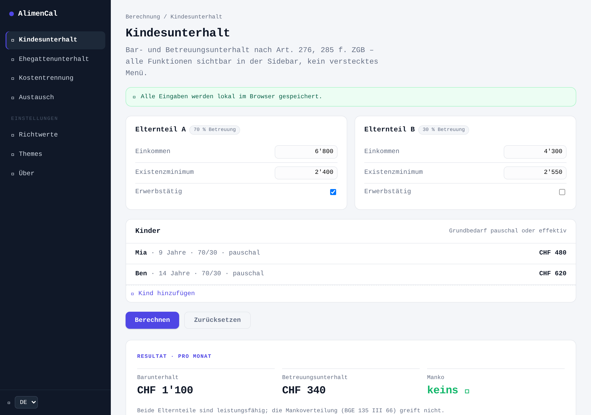
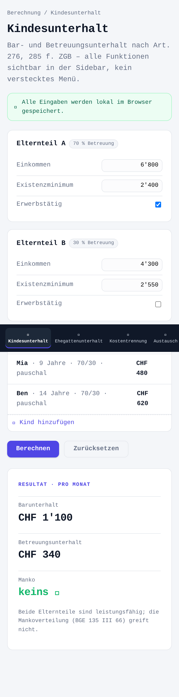
Feste Navigationsleiste links (Desktop), die zu einer Bottom-Tabbar auf dem Smartphone wird. Alle Funktionen immer sichtbar – kein verstecktes Menü. Ruhiges SaaS-Layout mit Kennzahlen-Karten.
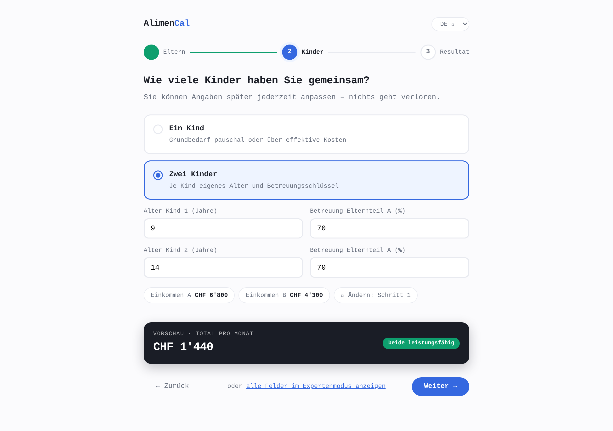
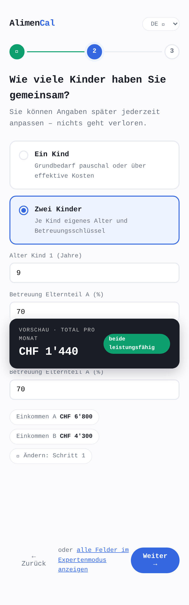
Fragen-Antwort-Fluss mit Stepper statt Formular-Tabellen: „Wie viele Kinder?", eine Frage nach der anderen. Live-Vorschau des Resultats unten, Expertenmodus optional. Minimalistisch, keine Menüstruktur nötig.
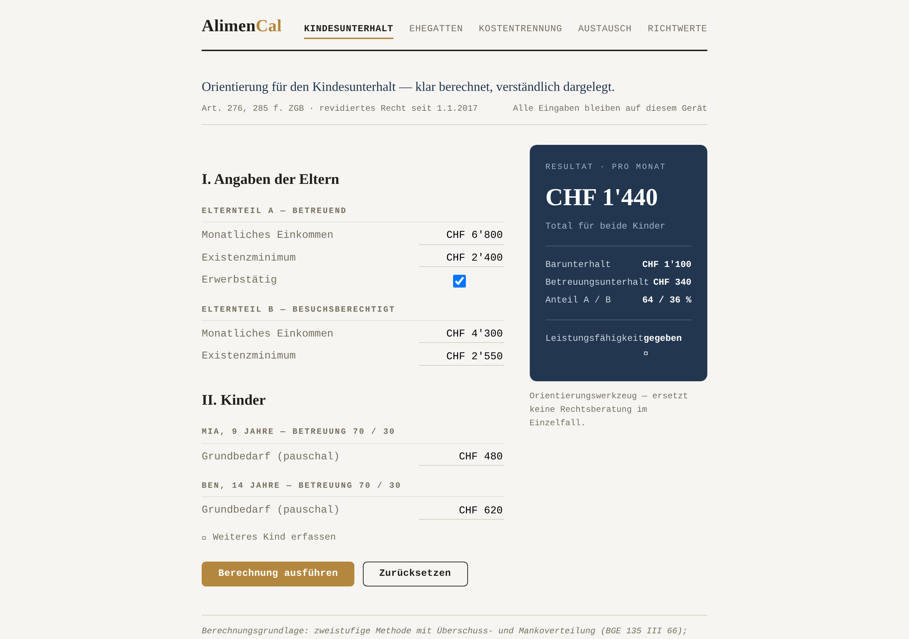
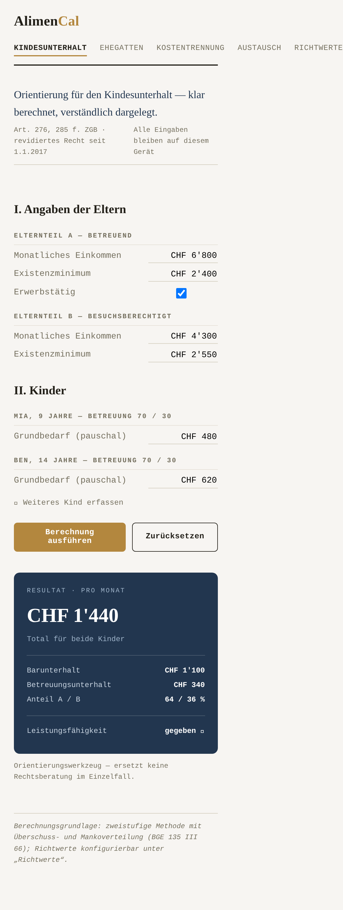
Serifen-Typografie, Gliederung nach römischen Ziffern, eine Textnavigation statt Icon-Menü – wie ein juristisches Dokument. Passt zur rechtlichen Natur der App; Resultat-„Urkunde“ rechts als Sticky-Karte.
Empfehlung · Apple-Design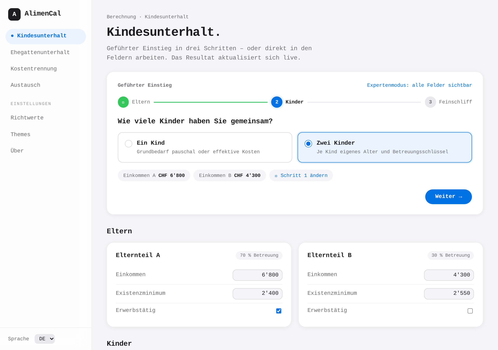
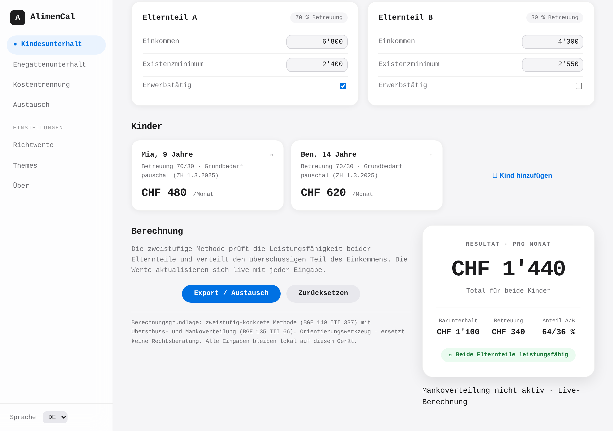
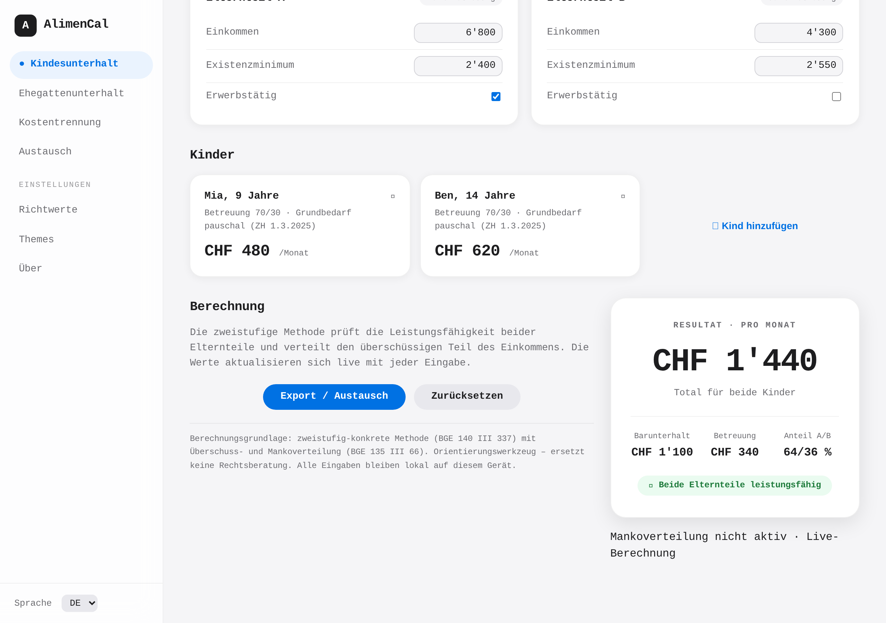
Struktur wie die Empfehlung (Sidebar + Wizard + Resultatkarte), aber mit Apple-Farbwelt: #f5f5f7/Weiss, einziger Blau-Akzent #0071e3, 18px-Radien, Pill-Buttons, SF-artige Typografie, translucent Sidebar. Screenshots: apple-empfehlung-1 bis -5 (Desktop + Mobile).
Empfehlung · Kombination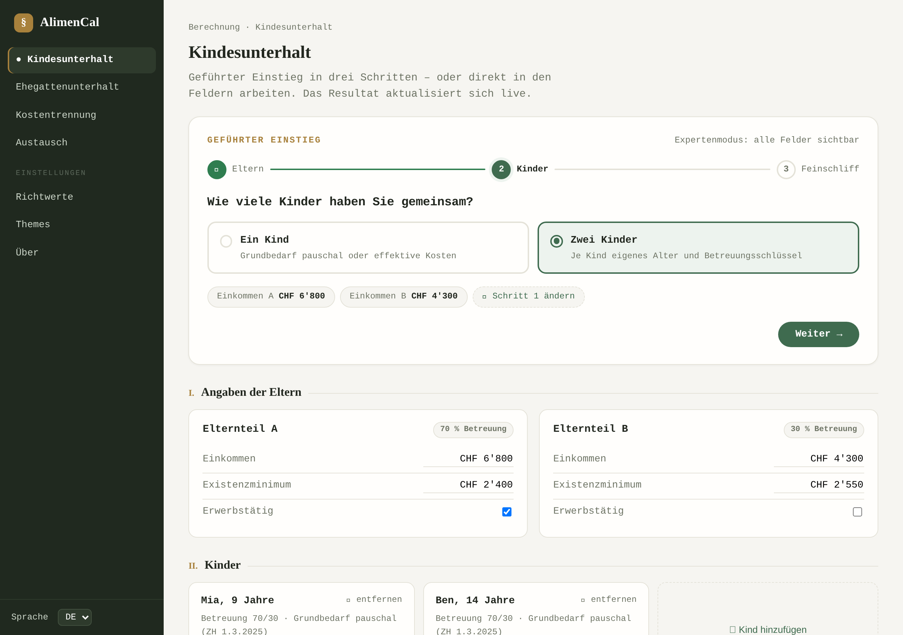
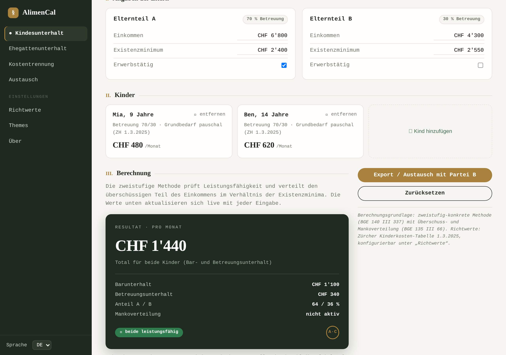
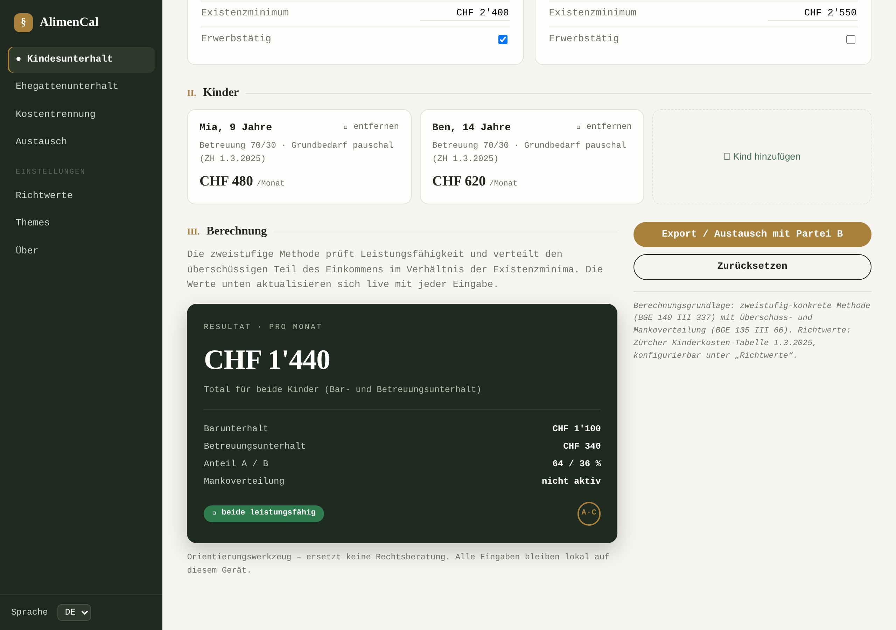
Sidebar-Navigation (immer sichtbar, am Handy als Tabbar), geführter Wizard-Einstieg mit Stepper und Live-Vorschau, dazu die „Urkunden“-Ergebniskarte mit Serifen-Ziffern und Rechts-Methodenverweis. Drei Desktop- und zwei Mobile-Screenshots unter previews/ (empfehlung-1 bis -5).
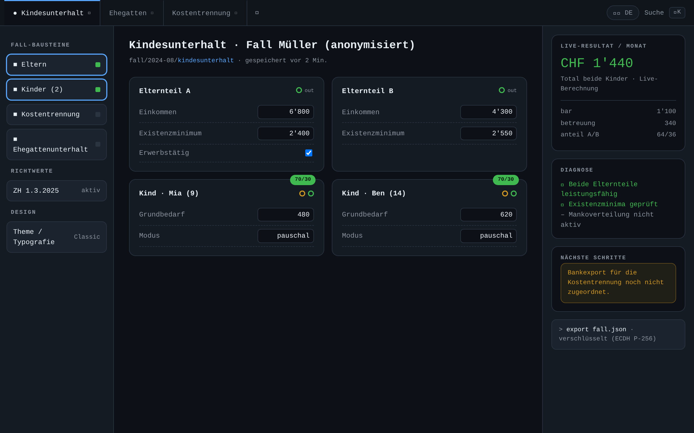
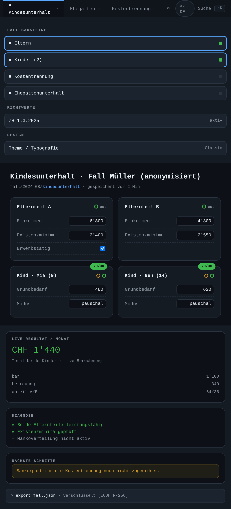
Drei-Spalten-Workspace (Bausteine / Arbeitsfläche / Live-Inspector) mit Registerkarten-Leiste statt Menü: für die Parteien wie ein „Fall-Dashboard“. Erst genommen für Power-User, dunkel und datengetrieben.